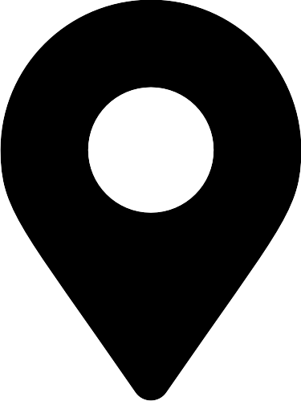

Cijambe, Subang Selatan
Cijambe, Subang Selatan
 Cijambe, Subang Selatan
Share this


Wisata pancing terpadu Lembah Gunung Kujang menempati area seluas 3 ha, tepat di bawah kaki Gunung Kujang, dan tampil dengan konsep rekreasi terpadu bagi keluarga yang mendambakan suasana alami. Keunggulan Wisata pancing Lembah Gunung Kujang diantaranya kolam pancing yang sangat luas, nyaman dan sejuk.
Wisata pancing terpadu Lembah Gunung Kujang merupakan salah satu pilihan terbaik bagi para penikmat rekreasi khususnya komunitas hobi pancing.
Fasilitas
Obyek wisata ini terletak di pinggir jalan raya subang-bandung sehingga sangat mudah untuk kunjungi. Adapun waktu tempuh dari Subang sekitar 15 menit, dari Bandung 1 jam dan dari jakarta via tol Sadang sekitar 3 jam.
sumber : https://www.kotasubang.com/68/wisata-pancing-terpadu-lembah-gunung-kujang-subang/


Ciater, Subang Selatan

Ciater, Subang Selatan

Ciater, Subang Selatan